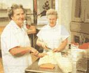

MOTHER'S KITCHEN
Soup secrets from Nub's Nob's Betty Spierling
GROWING UP IN HARBOR SPRINGS, MICHIGAN (a small town on Lake Michigan and a Petoskey stone's throw from the Mackinaw Bridge and Michigan's Upper Peninsula), there were only so many things to do on the typically 15°F winter days-and all of them involved snow. So, bright and early at 7:30 each Saturday and Sunday morning, my Dad would haul us five kids out of bed, stuff us with amounts of pancakes and sausage he believed would keep us from freezing to death, conduct a hat-and-mitten check, and pack all of us in the van for the 10minute ride to Nub's Nob.
Nub's is a ski mountain (my Colorado friends laugh at this description and draw an analogy to the expression "making a mountain out of a molehill"), but to us kids it was a winter wonderland. Each of us would pair off or ski alone for most of the morning. My two older brothers would break the speed record for schussing the black diamonds while my older sisters alternated stylishly-skied runs with flirting in the lift line. Me, well, I was stuck with wearing a garish blue-and-white checkered snowsuit, which assured my father-from any chair lift on the hill-of a quick spot-check as to my whereabouts and state of physical being.
But promptly at 1 P.M., we'd all stash our skis, loosen our boots, and stomp into the cafeteria. It was time for lunch.
Looking back, it's hard to explain what was so magical about sloppy joes, burgers, fresh cookies and pies, and those black tureens filled with soul-satisfying soup.
But to a semi-frozen, drippy-nosed five-year-old, it was the food of the gods. And despite my consumption of roughly 350 sloppy joes with onions and umpteen slices of Marvel's marvelous pecan pie, it was the soups that stuck to my ribs then and stick in my mind now: chicken noodle with noodles so egg-rich and chewy you could make a meal out of them... creamy cream of tomato that deftly avoided the trap of tasting like watered down catsup ... beef barley rich with meat and tender grains.
While the ladle got passed once or twice since my early days, I'm happy to report that the same wonderful soups are still being created today, by sisters Betty Spierling and Pauline Steele. And I'm also happy to report that, after years of prodding and some heavy persuasion, Betty has decided to share her secret recipes With MOTHER's readers.
2 20-ounce packages frozen mixed vegetables
1 cup soup barley
1 pound hamburger browned
1 large onion, diced
4 stalks celery, diced
White pepper
2 tablespoons Worcestershire sauce
1/8
teaspoon granulated garlic
3 drops Tabasco
Kitchen Bouquet (optional)
Start with a homemade beef-soup base, or use a prepared beef-soup base as directed on jar (available at supermarkets). Place barley in 5 to 6 quarts of water, depending on how hearty you want your soup. Add all seasonings plus the onion and celery, cook about 4 to 5 minutes until the barley is almost cooked, then add meat and mixed Vegetables and simmer until done. If the soup doesn't have a nice brown color, add a few drops of Kitchen Bouquet (available at supermarkets).
1 pound navy beans
1 cup diced ham
1/2
cup d
iced carrots
1/2 cup diced celery
12 cup diced onions
1 cup diced raw potatoes
White pepper
Small amount of Worcestershire sauce
Pinch granulated garlic
Parsley flakes
Chicken bouillon or soupbone
Soak beans overnight or most of the day in 2 quarts of water. Drain water when the beans are finished soaking and add remaining ingredients to a kettle or Crockpot. Add water until it occupies almost twice the space of the beans. Bring to a boil and simmer until the beans are done.
1
quart canned tomatoes or tomato juice
1 large onion, diced
1 1/2 cups diced celery
1/8 teaspoon granulated garlic
White pepper
6 to 8 bouillon cubes or beef soupbone
1/2 cup raw rice
1
tablespoon Worcestershire sauce
1 pound hamburger
1 cup dried cabbage
Parsley (optional)
Heat 2 quarts of water and add bouillon and the remaining ingredients. Simmer for 20 minutes. Brown meat and add, along with cabbage, to pot. Cook until rice and cabbage are tender. Parsley may also be added.
3 to 4 pounds raw chicken
4 quarts water
4 large carrots, diced
4 stalks celery, diced
1
medium onion, diced
1 tablespoon Worcestershire sauce
White pepper
Pinch granulated garlic
Chicken bouillon or soupbone to taste
1 to 1 1/2
pounds Reames frozen noodles (available at most supermarkets)
Parsley (optional)
Cook chicken in 4 quarts of water until done. Remove bones and dice the meat. Chill stock and skim the fat off the top. Add enough water to make about 6 quarts of stock, then toss in the vegetables and seasonings. Simmer about 20 minutes. Add meat and return to a boil. Add frozen noodles and simmer until tender. Top off the soup with a little chopped parsley.
3 large cans tomato juice*
1
quart canned tomatoes
1 large onion, diced
3 stalks celery, diced
Chicken bouillon or soupbone to taste
1/8 teaspoon allspice
White pepper
1/4 cup
or more sugar to taste
1/2 cup or more of powdered coffee creamer
Roux to thicken
Saute onion and celery in small amount of oil until tender. Add the rest of the ingredients except creamer and simmer for 15 minutes. Then add creamer (less fat and cholesterol than cream) and thicken to desired consistency.
To make roux, melt I pound oleo and add 3 to 3 1/2 cups of flour. Simmer on stove about 5 minutes but do not let brown. The recipe may not require all of this but what is left can be used for gravy or stored in the fridge for later use.
*If juice seems to have a high acid content, add a pinch of soda.
|
 The soup masters of Nub's Nob (from left); Betty Spierling and Pauline Steele stir up a pot of hearty fare. |
|
|